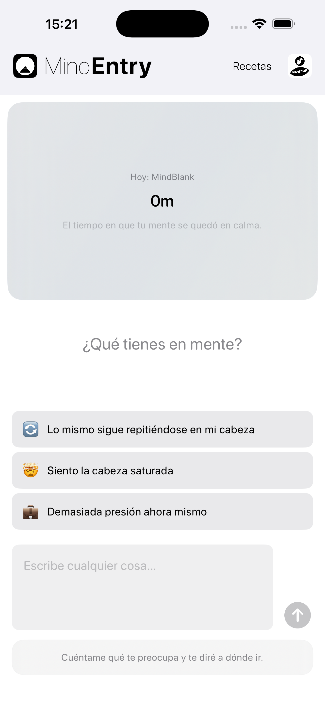
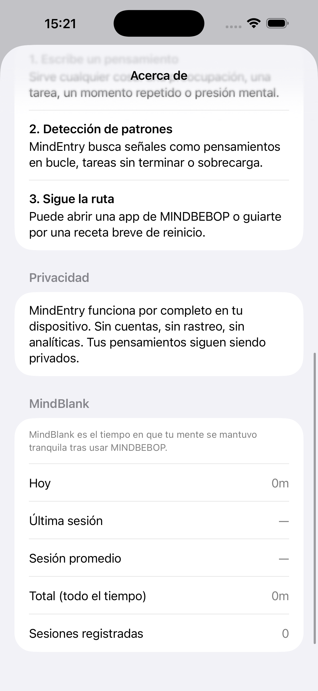

El tiempo durante el que tu mente permaneció en calma.
MindBlank no es una puntuación.
Es una señal discreta del tiempo durante el que tu mente permaneció libre de bucles de pensamiento no resueltos después de completar una interacción con MINDBEBOP.
En lugar de medir cuánto tiempo utilizas las aplicaciones, MINDBEBOP refleja cuánto tiempo no necesitaste otro reinicio cognitivo.
MINDBEBOP introduce una arquitectura modular para estructurar la actividad mental en segundo plano y ayudarte a recuperar la atención que los pensamientos no resueltos estaban consumiendo silenciosamente.
La mayoría de las apps miden el uso. MindBlank mide la ausencia.
Ese intervalo de calma es MindBlank.
Un reflejo pasivo de la calma mental.
MindBlank no requiere encuestas, valoraciones ni autoevaluaciones.
Después de completar una interacción con MINDBEBOP y no necesitar otro reinicio cognitivo durante un tiempo, MindBlank refleja discretamente ese intervalo.
Sin preguntas. Sin juicios. Sin interpretaciones.
Completas un Flip en MindFlipOut.
Pasan dos horas antes de que vuelvas a necesitar otra herramienta de MINDBEBOP.
MindBlank refleja: 2 horas de calma mental
El silencio no siempre significa resolución. A veces, los pensamientos regresan más tarde, cuando están listos.
MindBlank simplemente refleja un intervalo de calma: un periodo en el que los bucles no resueltos no reclamaban tu atención.
MindBlank está integrado en MindEntry, el punto de entrada al Mental Background OS de MINDBEBOP.
Con el tiempo, también puede aparecer en MindEntryBiz como una métrica organizativa agregada.


MindBlank se muestra dentro de MindEntry.
MindBlank no trata del rendimiento.
Trata de observar cuánto tiempo permaneció tranquila tu mente antes de necesitar otro reinicio cognitivo.
Copyright © 2026 MINDBEBOP — All rights reserved.